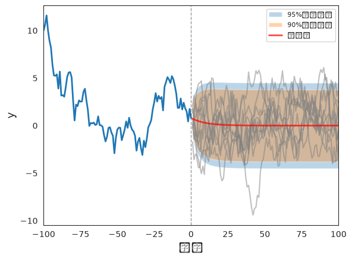
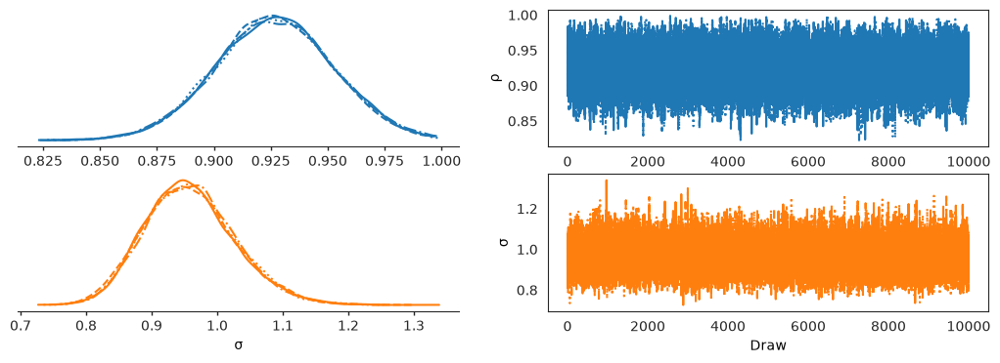
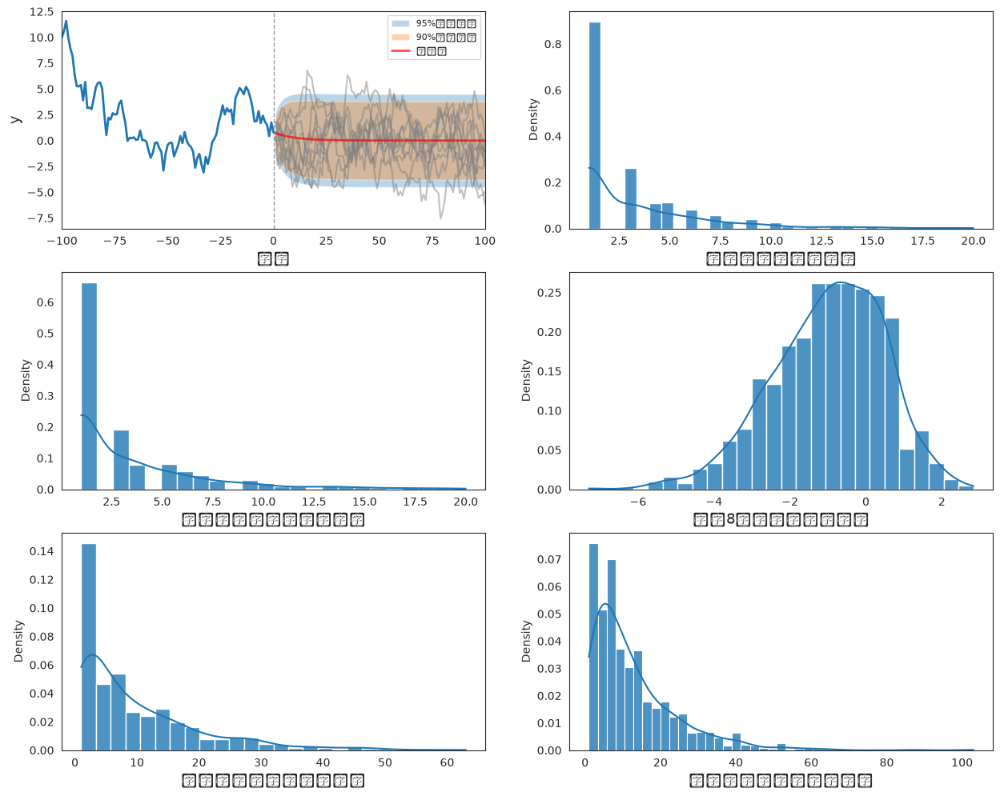
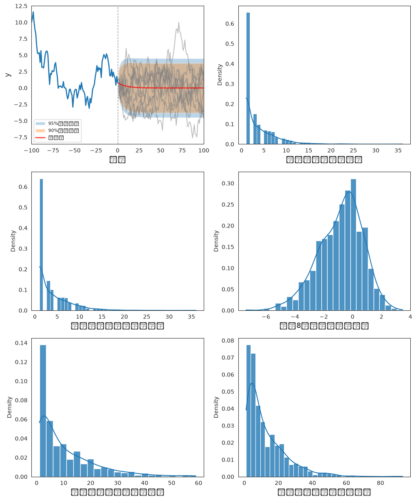
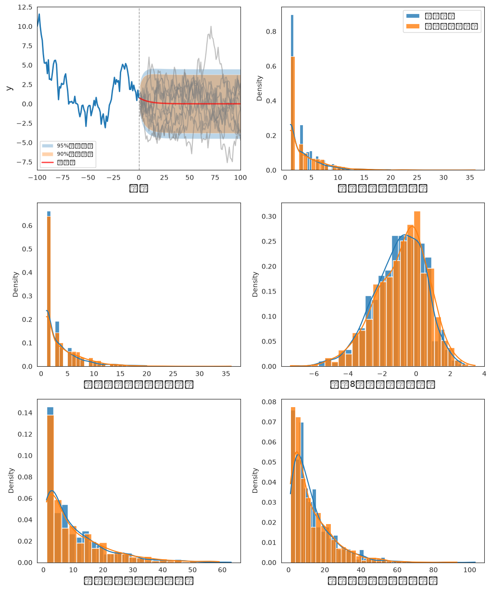

20. 预测 AR(1) 过程#
GPU
本讲座是在配有GPU的机器上构建的——不过没有GPU也可以运行。
Google Colab 提供带GPU的免费套餐，使用方法如下：
点击右上角的”播放”图标
选择 Colab
将运行时环境设置为包含GPU
!pip install numpyro jax arviz
本讲座介绍了用于预测一元自回归过程未来值函数的统计方法。
这些方法旨在考虑这些统计量的两个可能的不确定性来源：
影响转换规律的随机冲击
AR(1)过程参数值的不确定性
我们考虑两类统计量：
由AR(1)过程控制的随机过程 \(\{y_t\}\)的预期值 \(y_{t+j}\)
在时间 \(t\) 被定义为未来值 \(\{y_{t+j}\}_{j \geq 1}\) 的非线性函数的样本路径特性
样本路径特性是指诸如”到下一个转折点的时间”或”到下一次衰退的时间”之类的特征。
为研究样本路径特性，我们将使用Wecker [Wecker, 1979]推荐的模拟程序。
为了考虑参数的不确定性，我们将使用numpyro构建未知参数的贝叶斯联合后验分布。
本讲座建立在 AR(1)参数的后验分布 的基础上，该讲座详细研究了针对这个AR(1)模型参数的贝叶斯推断。
我们建议先阅读那篇讲座，因为在这里我们会更简要地讨论后验分布的构建。
让我们从一些导入开始。
import matplotlib.pyplot as plt
import matplotlib as mpl
FONTPATH = "fonts/SourceHanSerifSC-SemiBold.otf"
mpl.font_manager.fontManager.addfont(FONTPATH)
plt.rcParams['font.family'] = ['Source Han Serif SC']
import seaborn as sns
from typing import NamedTuple
# numpyro
import numpyro
import numpyro.distributions as dist
from numpyro.infer import MCMC, NUTS
# jax
import jax
import jax.random as random
import jax.numpy as jnp
from jax import lax
# arviz
import arviz as az
sns.set_style('white')
key = random.PRNGKey(0)
20.1. 一元一阶自回归过程#
考虑一元AR(1)模型，这与 AR(1)参数的后验分布 中研究的模型相同：
其中
标量 \(\rho\) 和 \(\sigma\) 满足 \(|\rho| < 1\) 和 \(\sigma > 0\)
\(\{\epsilon_{t+1}\}\) 是一个均值为 \(0\)、方差为 \(1\) 的独立同分布正态随机变量序列。
初始条件 \(y_{0}\) 是一个已知数。
方程(20.1)表明对于 \(t \geq 0\)，\(y_{t+1}\) 的条件密度为
此外，方程(20.1)还表明对于\(t \geq 0\)，\(j \geq 1\) 时 \(y_{t+j}\) 的条件密度为
预测分布(20.3)假设参数 \(\rho, \sigma\) 是已知的，我们通过以它们为条件来表达这一点。
我们还想计算一个不以 \(\rho,\sigma\) 为条件，而是考虑到我们对它们的不确定性的预测分布。
我们通过将(20.3)关于一个以观测历史 \(y^t = \{y_s\}_{s=0}^t\) 为条件的联合后验分布 \(\pi_t(\rho,\sigma | y^t)\) 进行积分来形成这个预测分布：
预测分布(20.3)假设参数 \((\rho,\sigma)\) 是已知的。
预测分布(20.4)假设参数 \((\rho,\sigma)\) 是不确定的，但有已知的概率分布 \(\pi_t(\rho,\sigma | y^t)\)。注意第二个等式成立是因为在给定 \((\rho, \sigma)\) 的情况下，\(\{y_t\}\) 是一个AR(1)过程。
我们还想计算一些”样本路径统计量”的预测分布，这可能包括
到下一次”衰退”的时间，
未来8个周期内 \(Y\) 的最小值，
“严重衰退”，以及
到下一个转折点（正或负）的时间。
为了在我们对参数值不确定的情况下实现这一目标，我们将按以下方式扩展Wecker的[Wecker, 1979]方法。
首先，模拟一个长度为\(T_0\)的初始路径；
对于给定的先验分布，在观察初始路径后从参数 \(\left(\rho,\sigma\right)\) 的后验联合分布中抽取大小为 \(N\) 的样本；
对于每个抽样 \(n=0,1,...,N\)，用参数 \(\left(\rho_n,\sigma_n\right)\) 模拟长度为 \(T_1\) 的”未来路径”，并计算我们的”样本路径统计量”；
最后，将 \(N\) 个样本的所需统计量绘制为经验分布。
20.2. 实现#
首先，我们将模拟一个样本路径，并以此为基础进行我们的预测。
除了绘制样本路径外，在假设已知真实参数值的情况下，我们将使用上述(20.3)所描述的条件分布绘制 \(0.9\) 和 \(0.95\) 的覆盖区间。
我们还将绘制一系列未来值序列的样本，并观察它们相对于覆盖区间落在何处。
class AR1(NamedTuple):
"""
表示一元一阶自回归（AR(1)）过程。
参数
----------
ρ : float
自回归系数，为满足平稳性必须满足 |ρ| < 1。
σ : float
误差项的标准差。
y0 : float
过程在时间 t=0 时的初始值。
T0 : int, optional
初始观测路径的长度（默认为100）。
T1 : int, optional
要模拟的未来路径的长度（默认为100）。
"""
ρ: float
σ: float
y0: float
T0: int = 100
T1: int = 100
我们通过一个用于验证参数的工厂函数来创建实例。
def create_ar1(ρ=0.9, σ=1.0, y0=10.0, T0=100, T1=100):
"""创建一个AR(1)实例，并检查参数限制。"""
if not abs(ρ) < 1:
raise ValueError("ρ 必须满足 |ρ| < 1 以保证平稳性")
if not σ > 0:
raise ValueError("σ 必须为正数")
return AR1(ρ=ρ, σ=σ, y0=y0, T0=T0, T1=T1)
使用 AR1 类，我们可以更方便地模拟路径。以下函数模拟一条长度为 \(T_0\) 的初始路径。
def AR1_simulate_past(ar1: AR1, key=key):
"""
模拟AR(1)过程在T0个周期内的一次实现。
参数
----------
ar1 : AR1
包含参数(ρ, σ, y0, T0, T1)的AR1命名元组。
key : jax.random.PRNGKey
用于生成随机噪声的JAX随机数种子。
返回
-------
initial_path : jax.numpy.ndarray
AR(1)过程的模拟路径以及初始值y0。
"""
ρ, σ, y0, T0 = ar1.ρ, ar1.σ, ar1.y0, ar1.T0
# 抽取 εs
ε = σ * random.normal(key, (T0,))
# 设置步进函数
def ar1_step(y_prev, t_ρ_ε):
ρ, ε_t = t_ρ_ε
y_t = ρ * y_prev + ε_t
return y_t, y_t
# 在时间步上扫描
_, y_seq = lax.scan(ar1_step, y0, (jnp.full(T0, ρ), ε))
# 拼接初始值
initial_path = jnp.concatenate([jnp.array([y0]), y_seq])
return initial_path
现在我们定义模拟函数，该函数生成AR(1)过程在未来 \(T_1\) 个周期内的一次实现。
def AR1_simulate_future(ar1: AR1, y_T0, N=10, key=key):
"""
模拟AR(1)过程在T1个周期内的一次实现。
参数
----------
ar1 : AR1
包含参数(ρ, σ, y0, T0, T1)的AR1命名元组。
y_T0 : float
过程在时间T0时的值。
N: int
要模拟的路径数量。
key : jax.random.PRNGKey
用于生成随机噪声的JAX随机数种子。
返回
-------
future_path : jax.numpy.ndarray
模拟的N条长度为T1的AR(1)过程路径。
"""
ρ, σ, T1 = ar1.ρ, ar1.σ, ar1.T1
def single_path_scan(y_T0, subkey):
ε = σ * random.normal(subkey, (T1,))
def ar1_step(y_prev, t_ρ_ε):
ρ, ε_t = t_ρ_ε
y_t = ρ * y_prev + ε_t
return y_t, y_t
_, y = lax.scan(ar1_step, y_T0, (jnp.full(T1, ρ), ε))
return y
# 拆分种子以生成不同的路径
subkeys = random.split(key, num=N)
# 模拟N条路径
future_path = jax.vmap(single_path_scan, in_axes=(None, 0))(y_T0, subkeys)
return future_path
以下函数绘制初始观测的AR(1)路径和模拟的未来路径，以及预测置信区间。
def plot_path(ar1, initial_path, future_path, ax, key=key):
"""
绘制初始观测的AR(1)路径和模拟的未来路径，
以及预测置信区间。
参数
----------
ar1 : AR1
包含过程参数(ρ, σ, T0, T1)的AR1命名元组。
initial_path : array-like
AR(1)过程的模拟初始路径，形状为(T0+1,)。
future_path : array-like
AR(1)过程的模拟未来路径，形状为(N, T1)。
ax : matplotlib.axes.Axes
用于绘图的Matplotlib坐标轴对象。
key : jax.random.PRNGKey, optional
用于可重复采样的JAX随机数种子。
绘图内容
-----
- 初始路径（历史数据）
- 多条模拟的未来路径
- 90%和95%的预测置信区间
- 预期的未来路径
"""
ρ, σ, T0, T1 = ar1.ρ, ar1.σ, ar1.T0, ar1.T1
# 计算矩和置信区间
y_T0 = initial_path[-1]
j = jnp.arange(1, T1+1)
center = ρ**j * y_T0
vars = σ**2 * (1 - ρ**(2 * j)) / (1 - ρ**2)
# 95% 置信区间
y_upper_c95 = center + 1.96 * jnp.sqrt(vars)
y_lower_c95 = center - 1.96 * jnp.sqrt(vars)
# 90% 置信区间
y_upper_c90 = center + 1.65 * jnp.sqrt(vars)
y_lower_c90 = center - 1.65 * jnp.sqrt(vars)
# 绘图
ax.plot(jnp.arange(-T0, 1), initial_path, lw=2)
ax.axvline(0, linestyle='--', alpha=.4, color='k', lw=1)
# 选择10条未来路径进行绘制
index = random.choice(
key, jnp.arange(future_path.shape[0]), (10,), replace=False
)
for i in index:
ax.plot(jnp.arange(1, T1+1), future_path[i, :], color='grey', alpha=.5)
# 绘制90%和95%置信区间
ax.fill_between(
jnp.arange(1, T1+1), y_upper_c95, y_lower_c95, alpha=.3, label='95%置信区间'
)
ax.fill_between(
jnp.arange(1, T1+1), y_upper_c90, y_lower_c90, alpha=.35, label='90%置信区间'
)
ax.plot(
jnp.arange(1, T1+1), center, color='red', alpha=.7, lw=2,
label='期望值'
)
ax.set_xlim([-T0, T1])
ax.set_xlabel("时间", fontsize=13)
ax.set_ylabel("y", fontsize=13)
ax.legend(fontsize=8)
ar1 = create_ar1(ρ=0.9, σ=1.0, y0=10.0)
# 模拟
initial_path = AR1_simulate_past(ar1)
future_path = AR1_simulate_future(ar1, initial_path[-1])
# 绘图
fig, ax = plt.subplots(1, 1)
plot_path(ar1, initial_path, future_path, ax)
plt.show()
/home/runner/miniconda3/envs/quantecon/lib/python3.13/site-packages/IPython/core/pylabtools.py:170: UserWarning: Glyph 26102 (\N{CJK UNIFIED IDEOGRAPH-65F6}) missing from font(s) DejaVu Sans.
fig.canvas.print_figure(bytes_io, **kw)
/home/runner/miniconda3/envs/quantecon/lib/python3.13/site-packages/IPython/core/pylabtools.py:170: UserWarning: Glyph 38388 (\N{CJK UNIFIED IDEOGRAPH-95F4}) missing from font(s) DejaVu Sans.
fig.canvas.print_figure(bytes_io, **kw)
/home/runner/miniconda3/envs/quantecon/lib/python3.13/site-packages/IPython/core/pylabtools.py:170: UserWarning: Glyph 32622 (\N{CJK UNIFIED IDEOGRAPH-7F6E}) missing from font(s) DejaVu Sans.
fig.canvas.print_figure(bytes_io, **kw)
/home/runner/miniconda3/envs/quantecon/lib/python3.13/site-packages/IPython/core/pylabtools.py:170: UserWarning: Glyph 20449 (\N{CJK UNIFIED IDEOGRAPH-4FE1}) missing from font(s) DejaVu Sans.
fig.canvas.print_figure(bytes_io, **kw)
/home/runner/miniconda3/envs/quantecon/lib/python3.13/site-packages/IPython/core/pylabtools.py:170: UserWarning: Glyph 21306 (\N{CJK UNIFIED IDEOGRAPH-533A}) missing from font(s) DejaVu Sans.
fig.canvas.print_figure(bytes_io, **kw)
/home/runner/miniconda3/envs/quantecon/lib/python3.13/site-packages/IPython/core/pylabtools.py:170: UserWarning: Glyph 26399 (\N{CJK UNIFIED IDEOGRAPH-671F}) missing from font(s) DejaVu Sans.
fig.canvas.print_figure(bytes_io, **kw)
/home/runner/miniconda3/envs/quantecon/lib/python3.13/site-packages/IPython/core/pylabtools.py:170: UserWarning: Glyph 26395 (\N{CJK UNIFIED IDEOGRAPH-671B}) missing from font(s) DejaVu Sans.
fig.canvas.print_figure(bytes_io, **kw)
/home/runner/miniconda3/envs/quantecon/lib/python3.13/site-packages/IPython/core/pylabtools.py:170: UserWarning: Glyph 20540 (\N{CJK UNIFIED IDEOGRAPH-503C}) missing from font(s) DejaVu Sans.
fig.canvas.print_figure(bytes_io, **kw)

图 20.1 初始路径和预测未来路径#
作为预测期的函数，置信区间的形状类似于 永久收入 II：线性二次方法 中所描述的。
20.3. 路径属性的预测分布#
Wecker [Wecker, 1979] 提出使用模拟技术来表征某些统计量的预测分布，这些统计量是 \(y\) 的非线性函数。
他将这些函数称为”路径属性”，以区别于单个数据点的属性。
他研究了给定序列 \(\{y_t\}\) 的两个特殊的未来路径属性。
第一个是到下一个转折点的时间。
他将 “转折点” 定义为 \(y\) 连续两次下降中的第二次的日期。
例如，如果 \(y_t(\omega)< y_{t-1}(\omega)< y_{t-2}(\omega)\)，那么时期 \(t\) 就是一个转折点。
为了研究到下一个转折点的时间，让 \(Z\) 作为一个指示过程
这里 \(\omega \in \Omega\) 是一个事件序列，\(Y_t: \Omega \rightarrow \mathbb{R}\) 根据 \(\omega\) 和AR(1)过程给出 \(y_t\)。
根据Wecker的定义，时期 \(t\) 是一个转折点，而 \(Y_{t-2}(\omega) \geq Y_{t-3}(\omega)\) 排除了时期 \(t-1\) 也是转折点的可能性。
那么到下一个转折点的时间这个随机变量被定义为关于\(Z\)的以下停时:
在下面的代码中，我们将这个统计量命名为到下一次衰退的时间，以将其与另一个转折点的概念区分开来。
此外，到下一次严重衰退的时间这个统计量以类似的方式定义，只是各期之间的下降幅度大于 \(0.02\)。
Wecker [Wecker, 1979]还研究了未来8个季度 \(Y\) 的最小值，可以定义为随机变量:
研究另一个可能的转折点概念也很有意思。
因此,令
定义今天或明天的正转折点统计量为
这被设计用来表示以下事件：
“在一次或两次下降之后，\(Y\) 将连续两个季度增长”
今天或明天的负转折点 \(N_t\) 也以同样的方式定义。
根据[Wecker, 1979]，我们可以通过模拟来计算每个时期 \(t\) 的 \(P_t\) 和 \(N_t\) 的概率。
不过，在下面的代码中，我们只使用 \(T_{t+1}(\omega)=1\) 来确定 \(P_t(\omega)\) 和 \(N_t(\omega)\)，因为我们只想找到第一个正转折点。
20.4. 一个类似Wecker的算法#
该过程包含以下步骤：
用 \(\omega_i\) 标记样本路径
对于给定日期 \(t\)，模拟 \(I\) 条长度为 \(N\) 的样本路径
对每条路径 \(\omega_i\)，计算相应的 \(W_t(\omega_i), W_{t+1}(\omega_i), \dots , W_{t+N}\) 值
将集合 \(\{W_t(\omega_i)\}^{I}_{i=1}, \ \{W_{t+1}(\omega_i)\}^{I}_{i=1}, \ \dots, \ \{W_{t+N}(\omega_i)\}^{I}_{i=1}\) 视为来自预测分布 \(f(W_{t+1} \mid y_t, y_{t-1}, \dots , y_0)\), \(f(W_{t+2} \mid y_t, y_{t-1}, \dots , y_0)\), \(\dots\), \(f(W_{t+N} \mid y_t, y_{t-1}, \dots , y_0)\) 的样本。
20.5. 使用模拟来近似后验分布#
下面的代码单元使用 numpyro 计算时间 \(t\) 时 \(\rho, \sigma\) 的后验分布。
我们像在AR(1)参数的后验分布中一样构建这个后验分布，详细讨论请参阅该讲座。
和那里一样，在定义似然函数时，我们选择以初始值 \(y_0\) 为条件。
这是 AR(1)参数的后验分布 中的条件假设，在这里这是恰当的选择，因为我们的初始路径始于一个非典型值 \(y_0 = 10\)。
def draw_from_posterior(data, size=10000, dis_plot=True, key=key):
"""从后验分布中抽取给定大小的样本。"""
def model(data):
# 从先验开始
ρ = numpyro.sample('ρ', dist.Uniform(-1, 1)) # 假设ρ稳定
σ = numpyro.sample('σ', dist.HalfNormal(jnp.sqrt(10)))
# 下一期y的期望值(ρ * y)，以y_0为条件
yhat = ρ * data[:-1]
# 实际实现值的似然
numpyro.sample('y_obs', dist.Normal(yhat, σ), obs=data[1:])
# 计算参数的后验分布
nuts_kernel = NUTS(model)
# 定义MCMC类以计算后验分布
mcmc = MCMC(
nuts_kernel,
num_warmup=5000,
num_samples=size,
num_chains=4, # 在轨迹图中绘制4条链
progress_bar=False,
chain_method='vectorized'
)
# 运行MCMC
mcmc.run(key, data=data)
# 获取后验样本
post_sample = {
'ρ': mcmc.get_samples()['ρ'],
'σ': mcmc.get_samples()['σ'],
}
# 绘制后验分布图和轨迹图
if dis_plot:
plot_data = az.from_numpyro(posterior=mcmc)
az.plot_trace_dist(plot_data, var_names=['ρ', 'σ'])
return post_sample
post_samples = draw_from_posterior(initial_path)

图 20.2 后验分布图和轨迹图#
上面的图展示了后验分布和轨迹图。后验分布（左列）展示了在观察数据后参数的边际分布，而轨迹图（右列）通过展示采样器在各次迭代中如何探索参数空间，来帮助诊断MCMC的收敛性。
20.6. 计算样本路径统计量#
接下来我们准备Python代码来计算我们的样本路径统计量。
这些统计量最初被定义为关于 \(\omega\) 的随机变量，但在这里我们使用 \(\{Y_t\}\) 作为参数，因为 \(\omega\) 是隐含的。
这两种定义是等价的，因为 \(\omega\) 只是通过 \(\{Y_t\}\) 来决定路径统计量。
此外，我们忽略定义中所有的相等情形，因为对于连续随机变量而言，相等发生的概率为零。
@jax.jit
def compute_path_statistics(initial_path, future_path):
"""计算AR(1)过程的路径统计量。"""
# 前置最后三个观测值，以便我们能够识别t=0时的转折
y = jnp.concatenate([initial_path[-3:], future_path])
n = y.shape[0]
def step(carry, i):
# 识别衰退
rec_cond = (y[i] < y[i-1]) & (y[i-1] < y[i-2]) & (y[i-2] > y[i-3])
# 识别严重衰退
sev_cond = (
(y[i] - y[i-1] < -0.02) & (y[i-1] - y[i-2] < -0.02) & (y[i-2] > y[i-3])
)
# 识别正转折点
up_cond = (
(y[i-2] > y[i-1]) & (y[i-1] > y[i]) & (y[i] < y[i+1]) & (y[i+1] < y[i+2])
)
# 识别负转折点
down_cond = (
(y[i-2] < y[i-1]) & (y[i-1] < y[i]) & (y[i] > y[i+1]) & (y[i+1] > y[i+2])
)
# 转换为整数
rec = jnp.where(rec_cond, 1, 0)
sev = jnp.where(sev_cond, 1, 0)
up = jnp.where(up_cond, 1, 0)
down = jnp.where(down_cond, 1, 0)
return carry, (rec, sev, up, down)
_, (rec_seq, sev_seq, up_seq, down_seq) = lax.scan(step, None, jnp.arange(3, n-2))
# 获取到第一次衰退的时间
next_recession = jnp.where(
jnp.any(rec_seq == 1), jnp.argmax(rec_seq == 1) + 1, len(y)
)
next_severe_recession = jnp.where(
jnp.any(sev_seq == 1), jnp.argmax(sev_seq == 1) + 1, len(y)
)
# 未来8个周期内的最小值
min_val_8q = jnp.min(future_path[:8])
# 获取到第一个转折点的时间
next_up_turn = jnp.where(
jnp.any(up_seq == 1),
jnp.maximum(jnp.argmax(up_seq == 1), 1), # 排除0的返回值
len(y)
)
next_down_turn = jnp.where(
jnp.any(down_seq == 1),
jnp.maximum(jnp.argmax(down_seq == 1), 1),
len(y)
)
path_stats = (
next_recession, next_severe_recession, min_val_8q,
next_up_turn, next_down_turn
)
return path_stats
以下函数在子图网格中创建路径统计量的可视化图。
def plot_path_stats(next_recession, next_severe_recession, min_val_8q,
next_up_turn, next_down_turn, ax, label=None):
"""在subplots(3,2)中绘制路径统计量"""
# ax[0, 0] 用于绘制y的路径
sns.histplot(next_recession, kde=True, stat='density', ax=ax[0, 1],
alpha=.8, label=label)
ax[0, 1].set_xlabel("到下一次衰退的时间", fontsize=13)
sns.histplot(next_severe_recession, kde=True, stat='density', ax=ax[1, 0],
alpha=.8, label=label)
ax[1, 0].set_xlabel("到下一次严重衰退的时间", fontsize=13)
sns.histplot(min_val_8q, kde=True, stat='density', ax=ax[1, 1],
alpha=.8, label=label)
ax[1, 1].set_xlabel("未来8个周期内的最小值", fontsize=13)
sns.histplot(next_up_turn, kde=True, stat='density', ax=ax[2, 0],
alpha=.8, label=label)
ax[2, 0].set_xlabel("到下一个正转折点的时间", fontsize=13)
sns.histplot(next_down_turn, kde=True, stat='density', ax=ax[2, 1],
alpha=.8, label=label)
ax[2, 1].set_xlabel("到下一个负转折点的时间", fontsize=13)
20.7. 原始Wecker方法#
现在我们应用Wecker的原始方法，以与数据生成模型相关的真实参数为条件，通过模拟未来路径并计算预测分布。
def plot_Wecker(ar1: AR1, initial_path, ax, N=1000, label='真实参数'):
"""
绘制"纯"Wecker方法的预测分布。
参数
----------
ar1 : AR1
包含过程参数(ρ, σ, T0, T1)的AR1命名元组。
initial_path : array-like
AR(1)过程的初始观测路径。
N : int
为预测分布模拟的未来样本路径数量。
label : str
绘图分布的图例标签。
"""
# 绘制模拟的初始路径和未来路径
y_T0 = initial_path[-1]
future_path = AR1_simulate_future(ar1, y_T0, N=N)
plot_path(ar1, initial_path, future_path, ax[0, 0])
next_reces = jnp.zeros(N)
severe_rec = jnp.zeros(N)
min_val_8q = jnp.zeros(N)
next_up_turn = jnp.zeros(N)
next_down_turn = jnp.zeros(N)
# 模拟未来路径并计算统计量
for n in range(N):
future_temp = future_path[n, :]
(next_reces_val, severe_rec_val, min_val_8q_val,
next_up_turn_val, next_down_turn_val
) = compute_path_statistics(initial_path, future_temp)
next_reces = next_reces.at[n].set(next_reces_val)
severe_rec = severe_rec.at[n].set(severe_rec_val)
min_val_8q = min_val_8q.at[n].set(min_val_8q_val)
next_up_turn = next_up_turn.at[n].set(next_up_turn_val)
next_down_turn = next_down_turn.at[n].set(next_down_turn_val)
# 绘制路径统计量
plot_path_stats(next_reces, severe_rec, min_val_8q,
next_up_turn, next_down_turn, ax, label=label)
fig, ax = plt.subplots(3, 2, figsize=(15, 12))
plot_Wecker(ar1, initial_path, ax)
plt.show()
/home/runner/miniconda3/envs/quantecon/lib/python3.13/site-packages/IPython/core/pylabtools.py:170: UserWarning: Glyph 26102 (\N{CJK UNIFIED IDEOGRAPH-65F6}) missing from font(s) DejaVu Sans.
fig.canvas.print_figure(bytes_io, **kw)
/home/runner/miniconda3/envs/quantecon/lib/python3.13/site-packages/IPython/core/pylabtools.py:170: UserWarning: Glyph 38388 (\N{CJK UNIFIED IDEOGRAPH-95F4}) missing from font(s) DejaVu Sans.
fig.canvas.print_figure(bytes_io, **kw)
/home/runner/miniconda3/envs/quantecon/lib/python3.13/site-packages/IPython/core/pylabtools.py:170: UserWarning: Glyph 32622 (\N{CJK UNIFIED IDEOGRAPH-7F6E}) missing from font(s) DejaVu Sans.
fig.canvas.print_figure(bytes_io, **kw)
/home/runner/miniconda3/envs/quantecon/lib/python3.13/site-packages/IPython/core/pylabtools.py:170: UserWarning: Glyph 20449 (\N{CJK UNIFIED IDEOGRAPH-4FE1}) missing from font(s) DejaVu Sans.
fig.canvas.print_figure(bytes_io, **kw)
/home/runner/miniconda3/envs/quantecon/lib/python3.13/site-packages/IPython/core/pylabtools.py:170: UserWarning: Glyph 21306 (\N{CJK UNIFIED IDEOGRAPH-533A}) missing from font(s) DejaVu Sans.
fig.canvas.print_figure(bytes_io, **kw)
/home/runner/miniconda3/envs/quantecon/lib/python3.13/site-packages/IPython/core/pylabtools.py:170: UserWarning: Glyph 26399 (\N{CJK UNIFIED IDEOGRAPH-671F}) missing from font(s) DejaVu Sans.
fig.canvas.print_figure(bytes_io, **kw)
/home/runner/miniconda3/envs/quantecon/lib/python3.13/site-packages/IPython/core/pylabtools.py:170: UserWarning: Glyph 26395 (\N{CJK UNIFIED IDEOGRAPH-671B}) missing from font(s) DejaVu Sans.
fig.canvas.print_figure(bytes_io, **kw)
/home/runner/miniconda3/envs/quantecon/lib/python3.13/site-packages/IPython/core/pylabtools.py:170: UserWarning: Glyph 20540 (\N{CJK UNIFIED IDEOGRAPH-503C}) missing from font(s) DejaVu Sans.
fig.canvas.print_figure(bytes_io, **kw)
/home/runner/miniconda3/envs/quantecon/lib/python3.13/site-packages/IPython/core/pylabtools.py:170: UserWarning: Glyph 21040 (\N{CJK UNIFIED IDEOGRAPH-5230}) missing from font(s) DejaVu Sans.
fig.canvas.print_figure(bytes_io, **kw)
/home/runner/miniconda3/envs/quantecon/lib/python3.13/site-packages/IPython/core/pylabtools.py:170: UserWarning: Glyph 19979 (\N{CJK UNIFIED IDEOGRAPH-4E0B}) missing from font(s) DejaVu Sans.
fig.canvas.print_figure(bytes_io, **kw)
/home/runner/miniconda3/envs/quantecon/lib/python3.13/site-packages/IPython/core/pylabtools.py:170: UserWarning: Glyph 19968 (\N{CJK UNIFIED IDEOGRAPH-4E00}) missing from font(s) DejaVu Sans.
fig.canvas.print_figure(bytes_io, **kw)
/home/runner/miniconda3/envs/quantecon/lib/python3.13/site-packages/IPython/core/pylabtools.py:170: UserWarning: Glyph 27425 (\N{CJK UNIFIED IDEOGRAPH-6B21}) missing from font(s) DejaVu Sans.
fig.canvas.print_figure(bytes_io, **kw)
/home/runner/miniconda3/envs/quantecon/lib/python3.13/site-packages/IPython/core/pylabtools.py:170: UserWarning: Glyph 34928 (\N{CJK UNIFIED IDEOGRAPH-8870}) missing from font(s) DejaVu Sans.
fig.canvas.print_figure(bytes_io, **kw)
/home/runner/miniconda3/envs/quantecon/lib/python3.13/site-packages/IPython/core/pylabtools.py:170: UserWarning: Glyph 36864 (\N{CJK UNIFIED IDEOGRAPH-9000}) missing from font(s) DejaVu Sans.
fig.canvas.print_figure(bytes_io, **kw)
/home/runner/miniconda3/envs/quantecon/lib/python3.13/site-packages/IPython/core/pylabtools.py:170: UserWarning: Glyph 30340 (\N{CJK UNIFIED IDEOGRAPH-7684}) missing from font(s) DejaVu Sans.
fig.canvas.print_figure(bytes_io, **kw)
/home/runner/miniconda3/envs/quantecon/lib/python3.13/site-packages/IPython/core/pylabtools.py:170: UserWarning: Glyph 20005 (\N{CJK UNIFIED IDEOGRAPH-4E25}) missing from font(s) DejaVu Sans.
fig.canvas.print_figure(bytes_io, **kw)
/home/runner/miniconda3/envs/quantecon/lib/python3.13/site-packages/IPython/core/pylabtools.py:170: UserWarning: Glyph 37325 (\N{CJK UNIFIED IDEOGRAPH-91CD}) missing from font(s) DejaVu Sans.
fig.canvas.print_figure(bytes_io, **kw)
/home/runner/miniconda3/envs/quantecon/lib/python3.13/site-packages/IPython/core/pylabtools.py:170: UserWarning: Glyph 26410 (\N{CJK UNIFIED IDEOGRAPH-672A}) missing from font(s) DejaVu Sans.
fig.canvas.print_figure(bytes_io, **kw)
/home/runner/miniconda3/envs/quantecon/lib/python3.13/site-packages/IPython/core/pylabtools.py:170: UserWarning: Glyph 26469 (\N{CJK UNIFIED IDEOGRAPH-6765}) missing from font(s) DejaVu Sans.
fig.canvas.print_figure(bytes_io, **kw)
/home/runner/miniconda3/envs/quantecon/lib/python3.13/site-packages/IPython/core/pylabtools.py:170: UserWarning: Glyph 20010 (\N{CJK UNIFIED IDEOGRAPH-4E2A}) missing from font(s) DejaVu Sans.
fig.canvas.print_figure(bytes_io, **kw)
/home/runner/miniconda3/envs/quantecon/lib/python3.13/site-packages/IPython/core/pylabtools.py:170: UserWarning: Glyph 21608 (\N{CJK UNIFIED IDEOGRAPH-5468}) missing from font(s) DejaVu Sans.
fig.canvas.print_figure(bytes_io, **kw)
/home/runner/miniconda3/envs/quantecon/lib/python3.13/site-packages/IPython/core/pylabtools.py:170: UserWarning: Glyph 20869 (\N{CJK UNIFIED IDEOGRAPH-5185}) missing from font(s) DejaVu Sans.
fig.canvas.print_figure(bytes_io, **kw)
/home/runner/miniconda3/envs/quantecon/lib/python3.13/site-packages/IPython/core/pylabtools.py:170: UserWarning: Glyph 26368 (\N{CJK UNIFIED IDEOGRAPH-6700}) missing from font(s) DejaVu Sans.
fig.canvas.print_figure(bytes_io, **kw)
/home/runner/miniconda3/envs/quantecon/lib/python3.13/site-packages/IPython/core/pylabtools.py:170: UserWarning: Glyph 23567 (\N{CJK UNIFIED IDEOGRAPH-5C0F}) missing from font(s) DejaVu Sans.
fig.canvas.print_figure(bytes_io, **kw)
/home/runner/miniconda3/envs/quantecon/lib/python3.13/site-packages/IPython/core/pylabtools.py:170: UserWarning: Glyph 27491 (\N{CJK UNIFIED IDEOGRAPH-6B63}) missing from font(s) DejaVu Sans.
fig.canvas.print_figure(bytes_io, **kw)
/home/runner/miniconda3/envs/quantecon/lib/python3.13/site-packages/IPython/core/pylabtools.py:170: UserWarning: Glyph 36716 (\N{CJK UNIFIED IDEOGRAPH-8F6C}) missing from font(s) DejaVu Sans.
fig.canvas.print_figure(bytes_io, **kw)
/home/runner/miniconda3/envs/quantecon/lib/python3.13/site-packages/IPython/core/pylabtools.py:170: UserWarning: Glyph 25240 (\N{CJK UNIFIED IDEOGRAPH-6298}) missing from font(s) DejaVu Sans.
fig.canvas.print_figure(bytes_io, **kw)
/home/runner/miniconda3/envs/quantecon/lib/python3.13/site-packages/IPython/core/pylabtools.py:170: UserWarning: Glyph 28857 (\N{CJK UNIFIED IDEOGRAPH-70B9}) missing from font(s) DejaVu Sans.
fig.canvas.print_figure(bytes_io, **kw)
/home/runner/miniconda3/envs/quantecon/lib/python3.13/site-packages/IPython/core/pylabtools.py:170: UserWarning: Glyph 36127 (\N{CJK UNIFIED IDEOGRAPH-8D1F}) missing from font(s) DejaVu Sans.
fig.canvas.print_figure(bytes_io, **kw)

图 20.3 Wecker方法得到的分布#
除了左上角的面板重复展示初始路径和置信区间外，每个面板都展示了一个样本路径统计量的预测分布。
这些是通过在参数固定为其真实值的情况下模拟大量未来路径而计算出来的。
因此，这些分布只反映了来自未来冲击的不确定性。
20.8. 扩展 Wecker 方法#
现在，我们应用我们的”扩展” Wecker 方法。该方法基于 (20.4) 定义的 \(y\) 的预测密度，考虑了参数 \(\rho, \sigma\) 的后验不确定性。
为了近似 (20.4) 右侧的积分，我们每次从模型 (20.1) 中模拟未来值序列时，都重复地从联合后验分布中抽取参数。
def plot_extended_Wecker(
ar1: AR1, post_samples, initial_path, ax, N=1000,
label='从后验分布抽样'
):
"""绘制扩展Wecker方法的预测分布"""
y0, T1 = ar1.y0, ar1.T1
y_T0 = initial_path[-1]
# 选择一个参数样本
index = random.choice(
key, jnp.arange(len(post_samples['ρ'])), (N,), replace=False
)
ρ_sample = post_samples['ρ'][index]
σ_sample = post_samples['σ'][index]
# 计算路径统计量
next_reces = jnp.zeros(N)
severe_rec = jnp.zeros(N)
min_val_8q = jnp.zeros(N)
next_up_turn = jnp.zeros(N)
next_down_turn = jnp.zeros(N)
subkeys = random.split(key, num=N)
# 每次后验抽样都模拟一条未来路径
future_paths = []
for n in range(N):
ar1_n = AR1(ρ=ρ_sample[n], σ=σ_sample[n], y0=y0, T1=T1)
future_temp = AR1_simulate_future(
ar1_n, y_T0, N=1, key=subkeys[n]
).reshape(-1)
future_paths.append(future_temp)
(next_reces_val, severe_rec_val, min_val_8q_val,
next_up_turn_val, next_down_turn_val
) = compute_path_statistics(initial_path, future_temp)
next_reces = next_reces.at[n].set(next_reces_val)
severe_rec = severe_rec.at[n].set(severe_rec_val)
min_val_8q = min_val_8q.at[n].set(min_val_8q_val)
next_up_turn = next_up_turn.at[n].set(next_up_turn_val)
next_down_turn = next_down_turn.at[n].set(next_down_turn_val)
# 绘制初始路径和从后验分布中抽样得到的未来路径
future_paths = jnp.stack(future_paths)
plot_path(ar1, initial_path, future_paths, ax[0, 0])
# 绘制路径统计量
plot_path_stats(next_reces, severe_rec, min_val_8q,
next_up_turn, next_down_turn, ax, label=label)
fig, ax = plt.subplots(3, 2, figsize=(12, 15))
plot_extended_Wecker(ar1, post_samples, initial_path, ax)
plt.show()
/home/runner/miniconda3/envs/quantecon/lib/python3.13/site-packages/IPython/core/pylabtools.py:170: UserWarning: Glyph 26102 (\N{CJK UNIFIED IDEOGRAPH-65F6}) missing from font(s) DejaVu Sans.
fig.canvas.print_figure(bytes_io, **kw)
/home/runner/miniconda3/envs/quantecon/lib/python3.13/site-packages/IPython/core/pylabtools.py:170: UserWarning: Glyph 38388 (\N{CJK UNIFIED IDEOGRAPH-95F4}) missing from font(s) DejaVu Sans.
fig.canvas.print_figure(bytes_io, **kw)
/home/runner/miniconda3/envs/quantecon/lib/python3.13/site-packages/IPython/core/pylabtools.py:170: UserWarning: Glyph 32622 (\N{CJK UNIFIED IDEOGRAPH-7F6E}) missing from font(s) DejaVu Sans.
fig.canvas.print_figure(bytes_io, **kw)
/home/runner/miniconda3/envs/quantecon/lib/python3.13/site-packages/IPython/core/pylabtools.py:170: UserWarning: Glyph 20449 (\N{CJK UNIFIED IDEOGRAPH-4FE1}) missing from font(s) DejaVu Sans.
fig.canvas.print_figure(bytes_io, **kw)
/home/runner/miniconda3/envs/quantecon/lib/python3.13/site-packages/IPython/core/pylabtools.py:170: UserWarning: Glyph 21306 (\N{CJK UNIFIED IDEOGRAPH-533A}) missing from font(s) DejaVu Sans.
fig.canvas.print_figure(bytes_io, **kw)
/home/runner/miniconda3/envs/quantecon/lib/python3.13/site-packages/IPython/core/pylabtools.py:170: UserWarning: Glyph 26399 (\N{CJK UNIFIED IDEOGRAPH-671F}) missing from font(s) DejaVu Sans.
fig.canvas.print_figure(bytes_io, **kw)
/home/runner/miniconda3/envs/quantecon/lib/python3.13/site-packages/IPython/core/pylabtools.py:170: UserWarning: Glyph 26395 (\N{CJK UNIFIED IDEOGRAPH-671B}) missing from font(s) DejaVu Sans.
fig.canvas.print_figure(bytes_io, **kw)
/home/runner/miniconda3/envs/quantecon/lib/python3.13/site-packages/IPython/core/pylabtools.py:170: UserWarning: Glyph 20540 (\N{CJK UNIFIED IDEOGRAPH-503C}) missing from font(s) DejaVu Sans.
fig.canvas.print_figure(bytes_io, **kw)
/home/runner/miniconda3/envs/quantecon/lib/python3.13/site-packages/IPython/core/pylabtools.py:170: UserWarning: Glyph 21040 (\N{CJK UNIFIED IDEOGRAPH-5230}) missing from font(s) DejaVu Sans.
fig.canvas.print_figure(bytes_io, **kw)
/home/runner/miniconda3/envs/quantecon/lib/python3.13/site-packages/IPython/core/pylabtools.py:170: UserWarning: Glyph 19979 (\N{CJK UNIFIED IDEOGRAPH-4E0B}) missing from font(s) DejaVu Sans.
fig.canvas.print_figure(bytes_io, **kw)
/home/runner/miniconda3/envs/quantecon/lib/python3.13/site-packages/IPython/core/pylabtools.py:170: UserWarning: Glyph 19968 (\N{CJK UNIFIED IDEOGRAPH-4E00}) missing from font(s) DejaVu Sans.
fig.canvas.print_figure(bytes_io, **kw)
/home/runner/miniconda3/envs/quantecon/lib/python3.13/site-packages/IPython/core/pylabtools.py:170: UserWarning: Glyph 27425 (\N{CJK UNIFIED IDEOGRAPH-6B21}) missing from font(s) DejaVu Sans.
fig.canvas.print_figure(bytes_io, **kw)
/home/runner/miniconda3/envs/quantecon/lib/python3.13/site-packages/IPython/core/pylabtools.py:170: UserWarning: Glyph 34928 (\N{CJK UNIFIED IDEOGRAPH-8870}) missing from font(s) DejaVu Sans.
fig.canvas.print_figure(bytes_io, **kw)
/home/runner/miniconda3/envs/quantecon/lib/python3.13/site-packages/IPython/core/pylabtools.py:170: UserWarning: Glyph 36864 (\N{CJK UNIFIED IDEOGRAPH-9000}) missing from font(s) DejaVu Sans.
fig.canvas.print_figure(bytes_io, **kw)
/home/runner/miniconda3/envs/quantecon/lib/python3.13/site-packages/IPython/core/pylabtools.py:170: UserWarning: Glyph 30340 (\N{CJK UNIFIED IDEOGRAPH-7684}) missing from font(s) DejaVu Sans.
fig.canvas.print_figure(bytes_io, **kw)
/home/runner/miniconda3/envs/quantecon/lib/python3.13/site-packages/IPython/core/pylabtools.py:170: UserWarning: Glyph 20005 (\N{CJK UNIFIED IDEOGRAPH-4E25}) missing from font(s) DejaVu Sans.
fig.canvas.print_figure(bytes_io, **kw)
/home/runner/miniconda3/envs/quantecon/lib/python3.13/site-packages/IPython/core/pylabtools.py:170: UserWarning: Glyph 37325 (\N{CJK UNIFIED IDEOGRAPH-91CD}) missing from font(s) DejaVu Sans.
fig.canvas.print_figure(bytes_io, **kw)
/home/runner/miniconda3/envs/quantecon/lib/python3.13/site-packages/IPython/core/pylabtools.py:170: UserWarning: Glyph 26410 (\N{CJK UNIFIED IDEOGRAPH-672A}) missing from font(s) DejaVu Sans.
fig.canvas.print_figure(bytes_io, **kw)
/home/runner/miniconda3/envs/quantecon/lib/python3.13/site-packages/IPython/core/pylabtools.py:170: UserWarning: Glyph 26469 (\N{CJK UNIFIED IDEOGRAPH-6765}) missing from font(s) DejaVu Sans.
fig.canvas.print_figure(bytes_io, **kw)
/home/runner/miniconda3/envs/quantecon/lib/python3.13/site-packages/IPython/core/pylabtools.py:170: UserWarning: Glyph 20010 (\N{CJK UNIFIED IDEOGRAPH-4E2A}) missing from font(s) DejaVu Sans.
fig.canvas.print_figure(bytes_io, **kw)
/home/runner/miniconda3/envs/quantecon/lib/python3.13/site-packages/IPython/core/pylabtools.py:170: UserWarning: Glyph 21608 (\N{CJK UNIFIED IDEOGRAPH-5468}) missing from font(s) DejaVu Sans.
fig.canvas.print_figure(bytes_io, **kw)
/home/runner/miniconda3/envs/quantecon/lib/python3.13/site-packages/IPython/core/pylabtools.py:170: UserWarning: Glyph 20869 (\N{CJK UNIFIED IDEOGRAPH-5185}) missing from font(s) DejaVu Sans.
fig.canvas.print_figure(bytes_io, **kw)
/home/runner/miniconda3/envs/quantecon/lib/python3.13/site-packages/IPython/core/pylabtools.py:170: UserWarning: Glyph 26368 (\N{CJK UNIFIED IDEOGRAPH-6700}) missing from font(s) DejaVu Sans.
fig.canvas.print_figure(bytes_io, **kw)
/home/runner/miniconda3/envs/quantecon/lib/python3.13/site-packages/IPython/core/pylabtools.py:170: UserWarning: Glyph 23567 (\N{CJK UNIFIED IDEOGRAPH-5C0F}) missing from font(s) DejaVu Sans.
fig.canvas.print_figure(bytes_io, **kw)
/home/runner/miniconda3/envs/quantecon/lib/python3.13/site-packages/IPython/core/pylabtools.py:170: UserWarning: Glyph 27491 (\N{CJK UNIFIED IDEOGRAPH-6B63}) missing from font(s) DejaVu Sans.
fig.canvas.print_figure(bytes_io, **kw)
/home/runner/miniconda3/envs/quantecon/lib/python3.13/site-packages/IPython/core/pylabtools.py:170: UserWarning: Glyph 36716 (\N{CJK UNIFIED IDEOGRAPH-8F6C}) missing from font(s) DejaVu Sans.
fig.canvas.print_figure(bytes_io, **kw)
/home/runner/miniconda3/envs/quantecon/lib/python3.13/site-packages/IPython/core/pylabtools.py:170: UserWarning: Glyph 25240 (\N{CJK UNIFIED IDEOGRAPH-6298}) missing from font(s) DejaVu Sans.
fig.canvas.print_figure(bytes_io, **kw)
/home/runner/miniconda3/envs/quantecon/lib/python3.13/site-packages/IPython/core/pylabtools.py:170: UserWarning: Glyph 28857 (\N{CJK UNIFIED IDEOGRAPH-70B9}) missing from font(s) DejaVu Sans.
fig.canvas.print_figure(bytes_io, **kw)
/home/runner/miniconda3/envs/quantecon/lib/python3.13/site-packages/IPython/core/pylabtools.py:170: UserWarning: Glyph 36127 (\N{CJK UNIFIED IDEOGRAPH-8D1F}) missing from font(s) DejaVu Sans.
fig.canvas.print_figure(bytes_io, **kw)

图 20.4 扩展Wecker方法得到的分布#
这些面板展示了相同的统计量，但现在每条未来路径都是用从后验分布中抽取的参数模拟的。
因此，这些分布结合了两个不确定性来源：未来冲击的随机性以及我们对 \((\rho, \sigma)\) 的不确定性。
20.9. 比较#
最后，我们将原始的Wecker方法和从后验分布中抽取参数值的扩展方法一起绘制，以比较在参数实际不确定时假装知道参数值所产生的差异。
fig, ax = plt.subplots(3, 2, figsize=(12, 15))
plot_Wecker(ar1, initial_path, ax)
ax[0, 0].clear()
plot_extended_Wecker(ar1, post_samples, initial_path, ax)
ax[0, 1].legend(fontsize=10)
plt.show()
/home/runner/miniconda3/envs/quantecon/lib/python3.13/site-packages/IPython/core/pylabtools.py:170: UserWarning: Glyph 26102 (\N{CJK UNIFIED IDEOGRAPH-65F6}) missing from font(s) DejaVu Sans.
fig.canvas.print_figure(bytes_io, **kw)
/home/runner/miniconda3/envs/quantecon/lib/python3.13/site-packages/IPython/core/pylabtools.py:170: UserWarning: Glyph 38388 (\N{CJK UNIFIED IDEOGRAPH-95F4}) missing from font(s) DejaVu Sans.
fig.canvas.print_figure(bytes_io, **kw)
/home/runner/miniconda3/envs/quantecon/lib/python3.13/site-packages/IPython/core/pylabtools.py:170: UserWarning: Glyph 32622 (\N{CJK UNIFIED IDEOGRAPH-7F6E}) missing from font(s) DejaVu Sans.
fig.canvas.print_figure(bytes_io, **kw)
/home/runner/miniconda3/envs/quantecon/lib/python3.13/site-packages/IPython/core/pylabtools.py:170: UserWarning: Glyph 20449 (\N{CJK UNIFIED IDEOGRAPH-4FE1}) missing from font(s) DejaVu Sans.
fig.canvas.print_figure(bytes_io, **kw)
/home/runner/miniconda3/envs/quantecon/lib/python3.13/site-packages/IPython/core/pylabtools.py:170: UserWarning: Glyph 21306 (\N{CJK UNIFIED IDEOGRAPH-533A}) missing from font(s) DejaVu Sans.
fig.canvas.print_figure(bytes_io, **kw)
/home/runner/miniconda3/envs/quantecon/lib/python3.13/site-packages/IPython/core/pylabtools.py:170: UserWarning: Glyph 26399 (\N{CJK UNIFIED IDEOGRAPH-671F}) missing from font(s) DejaVu Sans.
fig.canvas.print_figure(bytes_io, **kw)
/home/runner/miniconda3/envs/quantecon/lib/python3.13/site-packages/IPython/core/pylabtools.py:170: UserWarning: Glyph 26395 (\N{CJK UNIFIED IDEOGRAPH-671B}) missing from font(s) DejaVu Sans.
fig.canvas.print_figure(bytes_io, **kw)
/home/runner/miniconda3/envs/quantecon/lib/python3.13/site-packages/IPython/core/pylabtools.py:170: UserWarning: Glyph 20540 (\N{CJK UNIFIED IDEOGRAPH-503C}) missing from font(s) DejaVu Sans.
fig.canvas.print_figure(bytes_io, **kw)
/home/runner/miniconda3/envs/quantecon/lib/python3.13/site-packages/IPython/core/pylabtools.py:170: UserWarning: Glyph 21040 (\N{CJK UNIFIED IDEOGRAPH-5230}) missing from font(s) DejaVu Sans.
fig.canvas.print_figure(bytes_io, **kw)
/home/runner/miniconda3/envs/quantecon/lib/python3.13/site-packages/IPython/core/pylabtools.py:170: UserWarning: Glyph 19979 (\N{CJK UNIFIED IDEOGRAPH-4E0B}) missing from font(s) DejaVu Sans.
fig.canvas.print_figure(bytes_io, **kw)
/home/runner/miniconda3/envs/quantecon/lib/python3.13/site-packages/IPython/core/pylabtools.py:170: UserWarning: Glyph 19968 (\N{CJK UNIFIED IDEOGRAPH-4E00}) missing from font(s) DejaVu Sans.
fig.canvas.print_figure(bytes_io, **kw)
/home/runner/miniconda3/envs/quantecon/lib/python3.13/site-packages/IPython/core/pylabtools.py:170: UserWarning: Glyph 27425 (\N{CJK UNIFIED IDEOGRAPH-6B21}) missing from font(s) DejaVu Sans.
fig.canvas.print_figure(bytes_io, **kw)
/home/runner/miniconda3/envs/quantecon/lib/python3.13/site-packages/IPython/core/pylabtools.py:170: UserWarning: Glyph 34928 (\N{CJK UNIFIED IDEOGRAPH-8870}) missing from font(s) DejaVu Sans.
fig.canvas.print_figure(bytes_io, **kw)
/home/runner/miniconda3/envs/quantecon/lib/python3.13/site-packages/IPython/core/pylabtools.py:170: UserWarning: Glyph 36864 (\N{CJK UNIFIED IDEOGRAPH-9000}) missing from font(s) DejaVu Sans.
fig.canvas.print_figure(bytes_io, **kw)
/home/runner/miniconda3/envs/quantecon/lib/python3.13/site-packages/IPython/core/pylabtools.py:170: UserWarning: Glyph 30340 (\N{CJK UNIFIED IDEOGRAPH-7684}) missing from font(s) DejaVu Sans.
fig.canvas.print_figure(bytes_io, **kw)
/home/runner/miniconda3/envs/quantecon/lib/python3.13/site-packages/IPython/core/pylabtools.py:170: UserWarning: Glyph 30495 (\N{CJK UNIFIED IDEOGRAPH-771F}) missing from font(s) DejaVu Sans.
fig.canvas.print_figure(bytes_io, **kw)
/home/runner/miniconda3/envs/quantecon/lib/python3.13/site-packages/IPython/core/pylabtools.py:170: UserWarning: Glyph 23454 (\N{CJK UNIFIED IDEOGRAPH-5B9E}) missing from font(s) DejaVu Sans.
fig.canvas.print_figure(bytes_io, **kw)
/home/runner/miniconda3/envs/quantecon/lib/python3.13/site-packages/IPython/core/pylabtools.py:170: UserWarning: Glyph 21442 (\N{CJK UNIFIED IDEOGRAPH-53C2}) missing from font(s) DejaVu Sans.
fig.canvas.print_figure(bytes_io, **kw)
/home/runner/miniconda3/envs/quantecon/lib/python3.13/site-packages/IPython/core/pylabtools.py:170: UserWarning: Glyph 25968 (\N{CJK UNIFIED IDEOGRAPH-6570}) missing from font(s) DejaVu Sans.
fig.canvas.print_figure(bytes_io, **kw)
/home/runner/miniconda3/envs/quantecon/lib/python3.13/site-packages/IPython/core/pylabtools.py:170: UserWarning: Glyph 20174 (\N{CJK UNIFIED IDEOGRAPH-4ECE}) missing from font(s) DejaVu Sans.
fig.canvas.print_figure(bytes_io, **kw)
/home/runner/miniconda3/envs/quantecon/lib/python3.13/site-packages/IPython/core/pylabtools.py:170: UserWarning: Glyph 21518 (\N{CJK UNIFIED IDEOGRAPH-540E}) missing from font(s) DejaVu Sans.
fig.canvas.print_figure(bytes_io, **kw)
/home/runner/miniconda3/envs/quantecon/lib/python3.13/site-packages/IPython/core/pylabtools.py:170: UserWarning: Glyph 39564 (\N{CJK UNIFIED IDEOGRAPH-9A8C}) missing from font(s) DejaVu Sans.
fig.canvas.print_figure(bytes_io, **kw)
/home/runner/miniconda3/envs/quantecon/lib/python3.13/site-packages/IPython/core/pylabtools.py:170: UserWarning: Glyph 20998 (\N{CJK UNIFIED IDEOGRAPH-5206}) missing from font(s) DejaVu Sans.
fig.canvas.print_figure(bytes_io, **kw)
/home/runner/miniconda3/envs/quantecon/lib/python3.13/site-packages/IPython/core/pylabtools.py:170: UserWarning: Glyph 24067 (\N{CJK UNIFIED IDEOGRAPH-5E03}) missing from font(s) DejaVu Sans.
fig.canvas.print_figure(bytes_io, **kw)
/home/runner/miniconda3/envs/quantecon/lib/python3.13/site-packages/IPython/core/pylabtools.py:170: UserWarning: Glyph 25277 (\N{CJK UNIFIED IDEOGRAPH-62BD}) missing from font(s) DejaVu Sans.
fig.canvas.print_figure(bytes_io, **kw)
/home/runner/miniconda3/envs/quantecon/lib/python3.13/site-packages/IPython/core/pylabtools.py:170: UserWarning: Glyph 26679 (\N{CJK UNIFIED IDEOGRAPH-6837}) missing from font(s) DejaVu Sans.
fig.canvas.print_figure(bytes_io, **kw)
/home/runner/miniconda3/envs/quantecon/lib/python3.13/site-packages/IPython/core/pylabtools.py:170: UserWarning: Glyph 20005 (\N{CJK UNIFIED IDEOGRAPH-4E25}) missing from font(s) DejaVu Sans.
fig.canvas.print_figure(bytes_io, **kw)
/home/runner/miniconda3/envs/quantecon/lib/python3.13/site-packages/IPython/core/pylabtools.py:170: UserWarning: Glyph 37325 (\N{CJK UNIFIED IDEOGRAPH-91CD}) missing from font(s) DejaVu Sans.
fig.canvas.print_figure(bytes_io, **kw)
/home/runner/miniconda3/envs/quantecon/lib/python3.13/site-packages/IPython/core/pylabtools.py:170: UserWarning: Glyph 26410 (\N{CJK UNIFIED IDEOGRAPH-672A}) missing from font(s) DejaVu Sans.
fig.canvas.print_figure(bytes_io, **kw)
/home/runner/miniconda3/envs/quantecon/lib/python3.13/site-packages/IPython/core/pylabtools.py:170: UserWarning: Glyph 26469 (\N{CJK UNIFIED IDEOGRAPH-6765}) missing from font(s) DejaVu Sans.
fig.canvas.print_figure(bytes_io, **kw)
/home/runner/miniconda3/envs/quantecon/lib/python3.13/site-packages/IPython/core/pylabtools.py:170: UserWarning: Glyph 20010 (\N{CJK UNIFIED IDEOGRAPH-4E2A}) missing from font(s) DejaVu Sans.
fig.canvas.print_figure(bytes_io, **kw)
/home/runner/miniconda3/envs/quantecon/lib/python3.13/site-packages/IPython/core/pylabtools.py:170: UserWarning: Glyph 21608 (\N{CJK UNIFIED IDEOGRAPH-5468}) missing from font(s) DejaVu Sans.
fig.canvas.print_figure(bytes_io, **kw)
/home/runner/miniconda3/envs/quantecon/lib/python3.13/site-packages/IPython/core/pylabtools.py:170: UserWarning: Glyph 20869 (\N{CJK UNIFIED IDEOGRAPH-5185}) missing from font(s) DejaVu Sans.
fig.canvas.print_figure(bytes_io, **kw)
/home/runner/miniconda3/envs/quantecon/lib/python3.13/site-packages/IPython/core/pylabtools.py:170: UserWarning: Glyph 26368 (\N{CJK UNIFIED IDEOGRAPH-6700}) missing from font(s) DejaVu Sans.
fig.canvas.print_figure(bytes_io, **kw)
/home/runner/miniconda3/envs/quantecon/lib/python3.13/site-packages/IPython/core/pylabtools.py:170: UserWarning: Glyph 23567 (\N{CJK UNIFIED IDEOGRAPH-5C0F}) missing from font(s) DejaVu Sans.
fig.canvas.print_figure(bytes_io, **kw)
/home/runner/miniconda3/envs/quantecon/lib/python3.13/site-packages/IPython/core/pylabtools.py:170: UserWarning: Glyph 27491 (\N{CJK UNIFIED IDEOGRAPH-6B63}) missing from font(s) DejaVu Sans.
fig.canvas.print_figure(bytes_io, **kw)
/home/runner/miniconda3/envs/quantecon/lib/python3.13/site-packages/IPython/core/pylabtools.py:170: UserWarning: Glyph 36716 (\N{CJK UNIFIED IDEOGRAPH-8F6C}) missing from font(s) DejaVu Sans.
fig.canvas.print_figure(bytes_io, **kw)
/home/runner/miniconda3/envs/quantecon/lib/python3.13/site-packages/IPython/core/pylabtools.py:170: UserWarning: Glyph 25240 (\N{CJK UNIFIED IDEOGRAPH-6298}) missing from font(s) DejaVu Sans.
fig.canvas.print_figure(bytes_io, **kw)
/home/runner/miniconda3/envs/quantecon/lib/python3.13/site-packages/IPython/core/pylabtools.py:170: UserWarning: Glyph 28857 (\N{CJK UNIFIED IDEOGRAPH-70B9}) missing from font(s) DejaVu Sans.
fig.canvas.print_figure(bytes_io, **kw)
/home/runner/miniconda3/envs/quantecon/lib/python3.13/site-packages/IPython/core/pylabtools.py:170: UserWarning: Glyph 36127 (\N{CJK UNIFIED IDEOGRAPH-8D1F}) missing from font(s) DejaVu Sans.
fig.canvas.print_figure(bytes_io, **kw)

图 20.5 两种方法的比较#
这两组预测分布揭示了假装我们知道参数所付出的代价。
扩展Wecker方法每次模拟一条未来路径时，都会从 \((\rho, \sigma)\) 的后验分布中抽样。
因此，它在原始方法已有的冲击不确定性之上，又叠加了参数不确定性。
结果是，与参数固定为真实值时计算出的分布相比，它的预测分布更加分散。
20.10. 结论#
本讲座结合了两种工具来预测AR(1)过程未来路径的非线性函数。
Wecker的模拟方法让我们能够近似样本路径统计量（例如到下一个转折点的时间）的预测分布。
如AR(1)参数的后验分布中所计算的，关于 \((\rho, \sigma)\) 的贝叶斯后验分布使我们也能够考虑对支配该过程的参数的不确定性。
将这些结合起来，扩展Wecker方法产生的预测分布反映了一开始就确定的两种不确定性来源。
而像原始Wecker方法那样忽略参数不确定性，则会产生更紧的分布，从而夸大了我们对这些未来统计量的真实了解程度。